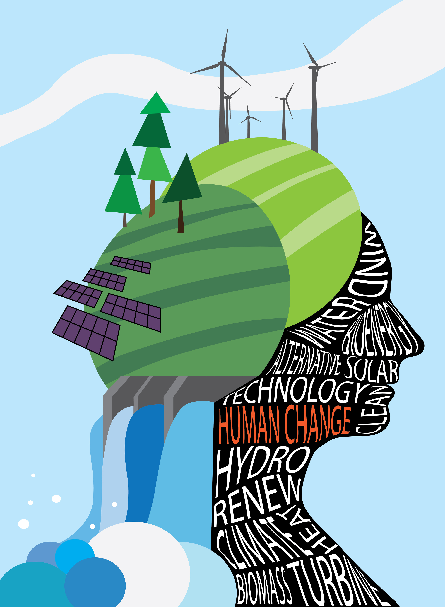
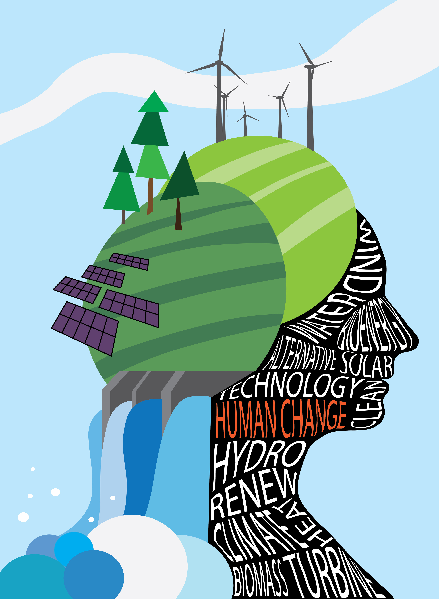

ACTIVISM
 

Project
Create an activisim poster that promotes, impedes, directs or intervenes in social, political, economic or environmental reform.
Programs
Adobe Photoshp and Adobe Illustrator
Process
Gather images of landscapes and yourself.
Trace an image of yourself and various forms of alternative energy using Illustrator to form the content of your poster. Create shapes within the personal outline and fill with environmental conservation terminology. Combine text and imagery to promote environmental reform through a poster.